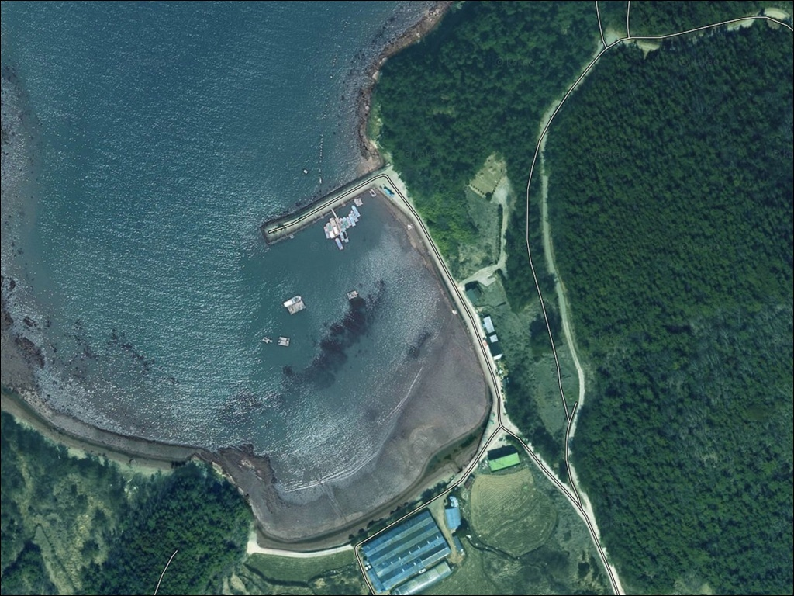
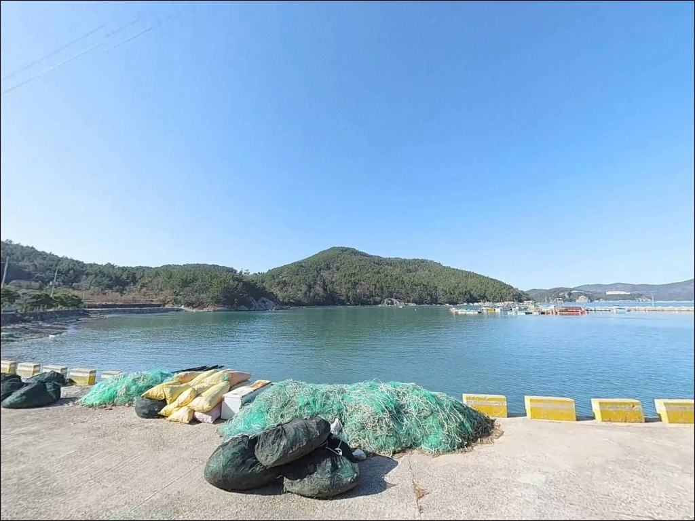
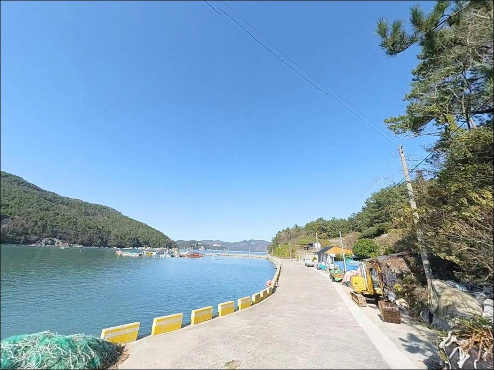
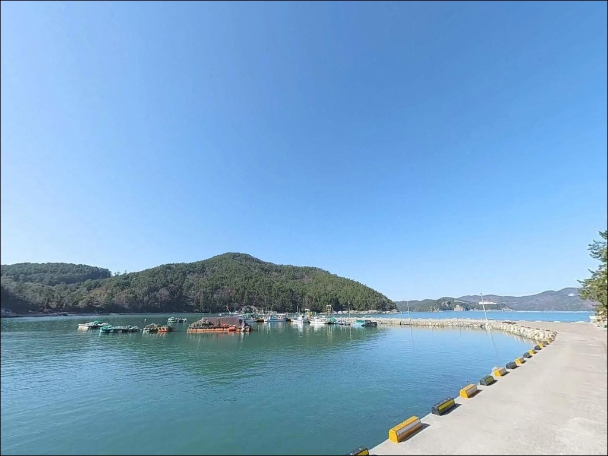
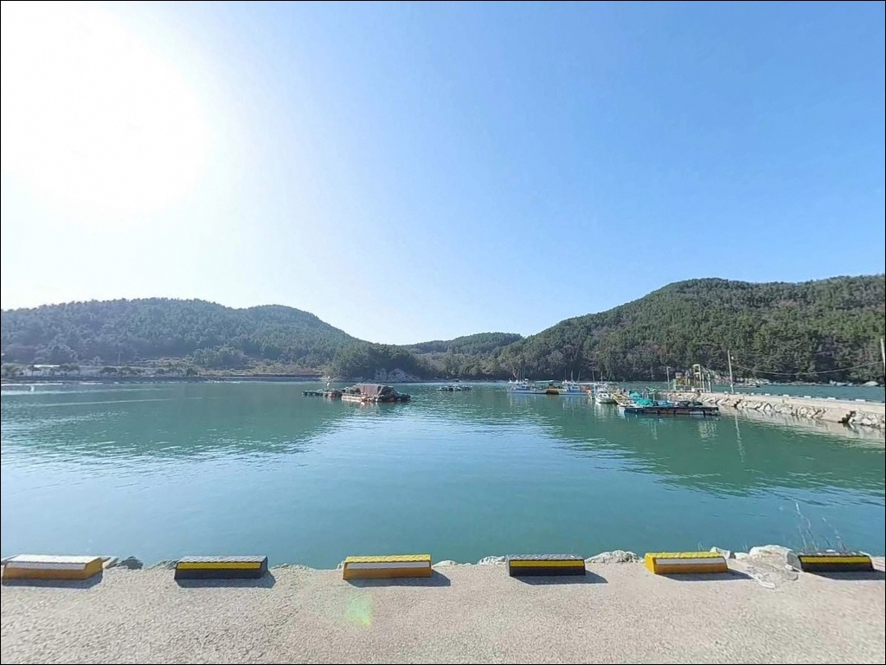
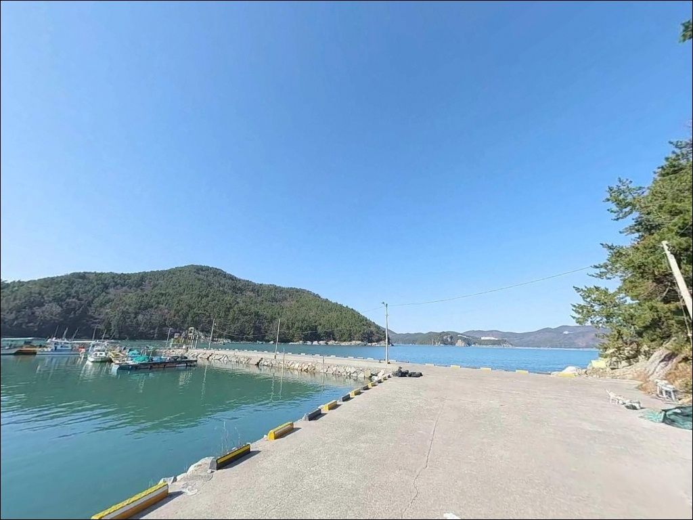
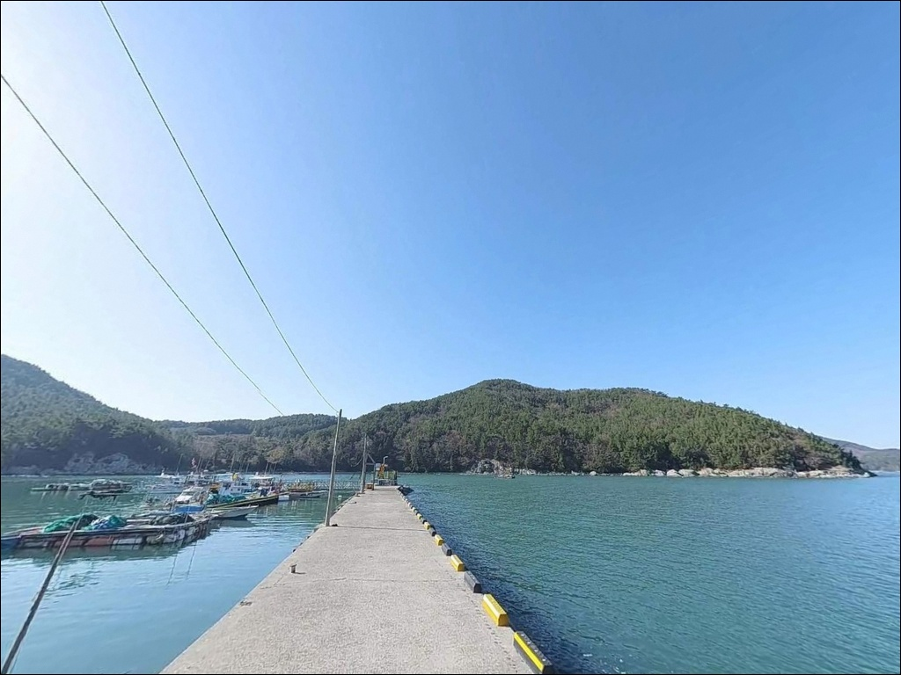
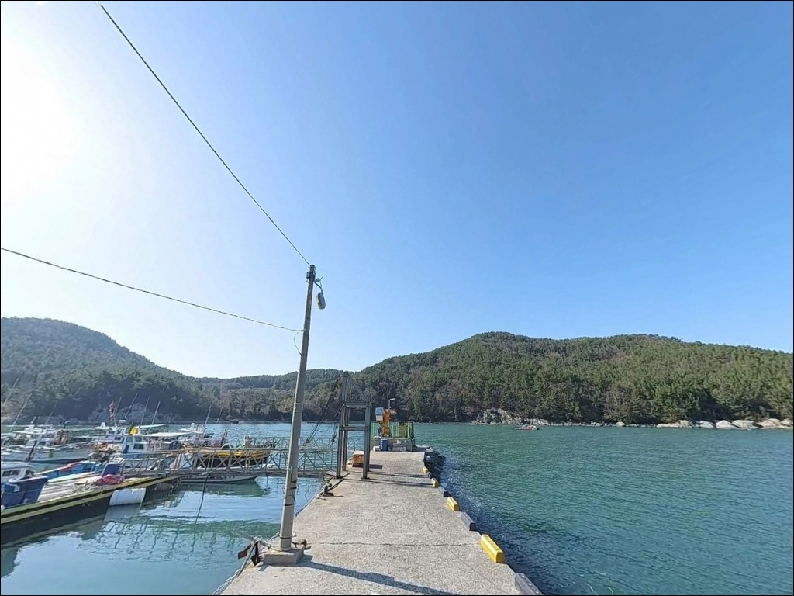
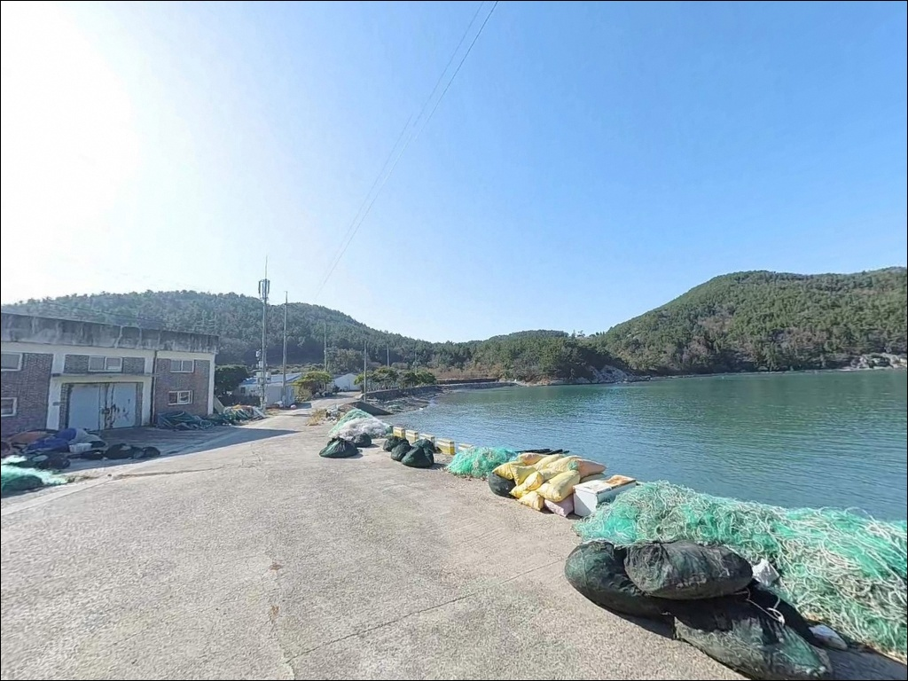

고흥 대영항 방파제, 만조 전후 수심 6m 조류 안정될 때 들어온 에깅 입질
이 페이지에는 광고(제휴 링크 포함)가 있으며, 광고 링크를 통해 구매하면 운영자가 판매 수익 또는 수수료를 받을 수 있습니다. 포인트 사진: 카카오맵 스카이뷰·로드뷰. 이 페이지의 지도·사진 이미지는 카카오맵의 실제 서비스 이미지와 다를 수 있습니다.


포인트 안내
대영항
전남 고흥군 동일면 봉영리 990-3
방파제가 있다고 물때 없이 들어가면
외항 끝단 자리가 조류에 밀려
원하는 방식 자체를 쓸 수 없는 포인트가 있습니다.
대영항은 만 입구에서 들어오는 조류 흐름이
방파제 끝단에 직접 작용하는 구조로,
입장 타이밍이 낚시 방식 선택보다 먼저인
포인트입니다.
내나로도 봉영리에 위치한 대영항은
1972년 지방어항으로 지정된 소형 항구입니다.
방파제 82m와 물양장 42m 규모로,
외항 방향 끝단과 꺾이는 코너 구간이
낚시 포인트로 성격이 가장 두드러집니다.
에깅부터 원투, 찌낚시까지
복수 낚시 방식이 동시에 가능한 지형을
갖추고 있습니다.
이 글은 대영항의 진입 동선, 차박 여건,
낚시 지형 분석, 스타일별 공략 조건에 집중합니다.
조황 단정이나 특정 어종 보장은
이 글의 범위에 포함되지 않습니다.

1. 진입 동선과 차량 접근 여건
고흥반도에서 나로1대교를 건너
내나로도로 진입하면 이후 봉영리 방향
국도 구간을 따라 이동하는 흐름입니다.
봉영리 마을 안길을 통과하는 구조이지만
도로 폭이 확보된 편으로
일반 승용차부터 소형 캠핑카까지 진입이 가능합니다.
선착장 내부 공간이 넓어 회차 여건이 양호하고,
방파제 초입 부근과 선착장 중심부의
넓은 콘크리트 공터가 주차 후보지입니다.
어선 접안 구간과 어구 위에 주차하지 않는 것이
기본 매너이며,
새벽~오전 어민 조업 시간에는
선착장 통행로를 비워두는 것이 우선입니다.
항 주변에 민가와 어업 시설이 함께 분포하는 구조라
낚시꾼 전용 공간이 따로 지정된 구역은 아닙니다.
어선 입출항 동선을 파악한 뒤
방해가 되지 않는 자리를 먼저 확인하는 것이
진입 후 첫 번째 판단입니다.

2. 차박 환경과 야간 체류 여건
대영항은 항만 가로등이 설치되어 있어
야간에도 완전한 암흑 환경은 아닙니다.
민가와 적당한 거리를 두고 있는 구조라
야간 낚시와 차박 시
프라이버시 확보는 상대적으로 양호한 편입니다.
차박을 메인으로 삼기에는
선착장 공터가 어선 작업과 공유하는 공간임을
감안해야 합니다.
낚시 후 짧게 하룻밤 머무는 용도라면
어선 동선을 피한 자리에서
운용이 가능한 구조입니다.
바람 영향을 받는 외항 쪽 방향은
날씨 확인 후 차량 위치를 조정하는 것이 좋습니다.
야간 낚시 시에는 집어등이
항행 선박의 시야를 방해하지 않도록
조사 각도를 조절하고,
헤드랜턴은 반드시 준비합니다.
구명조끼 착용은 방파제 끝단에서
필수 기본 원칙입니다.


3. 주변 편의시설 및 인프라 현황
대영항 반경 1km 안쪽은
봉영리 어촌 마을이 배후에 위치하는 구조입니다.
마을 내 소형 점포에서
간단한 소모품 구입이 가능한 편이며,
대형 마트나 낚시 용품점이 필요하다면
나로2대교를 건너 외나로도 방면으로 이동해야 합니다.
나로도항 일대에는 수산시장, 식당가, 주유소가
모여 있어 출조 전 보급을 겸한다면
이 동선을 먼저 활용하는 것이 효율적입니다.
식수와 얼음은 나로도항 방면에서
사전에 준비하고 진입하는 편이
현실적인 방법입니다.

4. 방문 전 반드시 챙겨야 할 준비사항
대영항 방문 전 첫 번째 확인 사항은 물때입니다.
방파제 끝단과 만 입구 쪽 조류 흐름이
직접 작용하는 구조이므로,
사리 전후에는 채비 컨트롤이
어려워지는 구간이 생깁니다.
바다타임에서 봉영리 기준 물때를 확인하고
만조 전후 또는 조금 전후 타이밍을
기본 기준으로 잡습니다.
방파제 끝단은 파도 상승 시 빠르게 위험 구간으로 변합니다.
기상청 예보를 당일 아침 다시 확인하고,
풍속 5m/s 이상 예보라면
끝단 자리보다 내항 쪽 자리를 우선 고려합니다.
테트라포트와 젖은 콘크리트 구간은
미끄럼 사고 위험이 높아 신발 접지력을
반드시 확인합니다.
에깅 채비는 조류 속도에 맞춰 에기 호수를 조절해야 합니다.
조류가 빠른 시간대에는 무거운 에기로 수심을 유지하고,
만조 전후 조류가 완만해지는 타이밍에는
가벼운 에기로 자연스러운 폴링을 연출하는 방식이
이 포인트 지형 조건에 맞습니다.

5. 외항 끝단에서 조과가 달라지는 조건
대영항의 방파제는 'ㄱ'자로 꺾인 주 방파제와
일자형 보조 방파제가 항을 감싸는 구조입니다.
방파제 끝단 기준으로 만조 시 수심은
6~8m 수준이며,
간조 시에도 4m 이상의 수심이 유지되어
물때에 상관없이 낚시 운용이 가능합니다.
외항 방면은 자연 갯바위와 석축이 맞닿은 구간이 있으며,
바닥은 모래와 뻘이 혼재된 저질입니다.
이 구조가 바닥 어종의 은신처와
먹이 활동 구간을 동시에 형성합니다.
방파제가 꺾이는 코너 지점 주변의 석축 구간은
찌낚시 자리로 성격이 뚜렷하며,
수심 변화 구간을 집중 탐색하는 방식이 유효합니다.
만 안쪽에 자리한 구조라
완전 개방형 외해보다는 파도 직격 노출이 덜하고,
만 입구에서 들어오는 조류 흐름이
방파제 끝단과 수로 구간에 작용합니다.
이 조류 흐름이 활성화되는 타이밍을
노리는 것이 이 포인트 공략의 핵심입니다.
출조 전 최신 조황은 꼭 검색해 보시기 바랍니다.


6. 대영항 지형에 어울리는 낚시 스타일
에깅은 이 포인트에서 가장 잘 맞는 낚시 방식입니다.
가을철 갑오징어·주꾸미 시즌에
방파제 내·외항 전역에서 반응이 확인되는 해역이며,
야간에는 방파제 가로등 아래에서
풀치와 볼락 루어 반응이 살아나는 구간이
별도로 형성됩니다.
원투낚시는 외항 정면으로 투척할 때
도다리, 붕장어, 보리멸 대상으로
바닥층 공략이 유효한 스타일입니다.
바닥 걸림이 적은 모래·뻘 혼합 저질이라
초행 낚시인도 운용하기 수월한 편이며,
내항 구간에서는 조류 영향이 줄어
원투채비 회수가 상대적으로 편한 자리입니다.
찌낚시는 방파제 꺾이는 지점의 석축 주위에서
반유동 채비 운용이 효과적입니다.
감성돔과 숭어를 대상으로
수심 변화 구간을 집중 공략하는 방식이 어울리며,
만조 전후 수심이 확보되는 타이밍을
기준으로 잡습니다.
수온이 오르는 봄 이후부터 활성도가 올라가는
남해 연안 전형적인 패턴을 따르는 포인트입니다.

7. 대안 포인트와 플랜 B 동선
대영항이 여의치 않을 때 첫 번째 대안은
덕흥항 방파제입니다.
차량으로 약 5분 거리이며,
대영항보다 방파제 길이가 길고
외항 쪽 수심이 깊어
원투 대물 조과를 노리기 좋은 구조입니다.
대영항에서 조류가 너무 강한 날이라면
덕흥항 쪽 포인트를 먼저 점검하는 동선이 유효합니다.
나로2대교를 건너 외나로도 방면으로 이동하면
신금항 방파제가 약 3km 거리에 있습니다.
나로도 일대 대표 연안 낚시 포인트로
에깅·원투·루어 모두 운용이 가능하며,
해질녘~야간 입질이 활발한 편입니다.
대영항과 신금항을 동선으로 묶어
낮과 야간을 나눠 공략하는 방식도 효율적입니다.
차박 대안으로는
덕흥해수욕장 주차장이 차량 5분 거리에 있습니다.
화장실 여건이 양호하고
소나무 숲이 인접해 있어
낚시보다 차박 환경 자체를 우선한다면
대영항보다 편안한 선택지입니다.

방파제 구조를 파악하면
대영항이 달라 보입니다
에깅과 원투낚시를 함께 즐기는 낚시인이라면
대영항의 지형 조건은 잘 맞는 구조입니다.
'ㄱ'자 방파제 코너 구간, 외항 끝단 수심 변화,
가로등 불빛 아래 야간 볼락까지
한 포인트에서 복수 방식을 돌릴 수 있는
지방어항의 장점이 살아 있습니다.
반면 물때 계산 없이 사리 전후에 진입하거나,
어선 조업 시간을 고려하지 않고
선착장 통행로를 막으면
현장에서 자리 선택폭이 크게 좁아집니다.
물때 확인, 진입 시간 조율, 자급 체제 준비,
이 세 가지를 갖추고 간다면
나로도 권역에서 조용하고 실속 있는
출조지가 될 수 있는 곳입니다.
낚시를 마치고 하룻밤 머무르는 조용한 차박 여행자라면,
어선 동선을 피한 자리에 차를 세우고
봉영리 어촌 마을의 밤을 품은 채
낚시와 차박을 동시에 챙길 수 있는 포인트입니다.